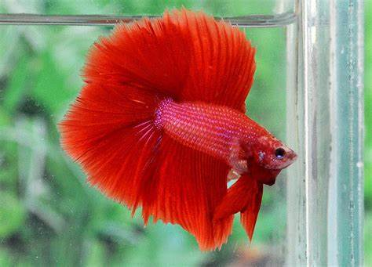
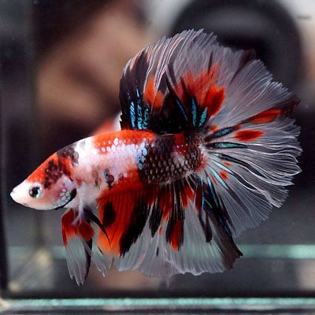

Exotic Pet Information |
| Betta |
| Crown Tail Betta |
|
Crowntail bettas are one of the most common species of betta fish and are colloquially referred to simply as bettas, or their behavioral name, Siamese fighting fish. |
| Double Tail Betta |
 |
It isn’t a simple split in the tail. There are two caudal peduncles for the tail to attach to, as well. The tails aren’t always identical in size, though (for show bettas), that’s the ideal. |
| Rosetail Betta |
 |
Rosetail bettas developed out of the halfmoon betta. The difference is extensive branching of the rays within the tail itself. |
| Guppy |
| Blue Grass |
 |
In the head section to the base of the tail is yellow, while the creature on the fins and tail are blue and combined with black spots. |
| Full Red Albino |
 |
This guppy boasts a vivid, solid red coloration that typically covers most of its body in the case of males. |
| Red Grass Metalhead |
 |
This is a Red Grass Metalhead guppy strain that has a BEAUTIFUL red grass pattern tail. |
| Leopard Gecko |
| Mack Snow Leopard Gecko |
|
The Mack Snow gene is the heterozygous form of the gene.They are either white or pale yellow in color with black bands or spots.Their color tends to darken as they age. |
| Diablo Blanco Leopard Gecko |
|
The Diablo Blanco morph is a combination of the Blizzard trait and the RAPTORs. Essentially, a Diablo Blanco is a combination of 4 recessive traits, Blizzards, Tremper Albinos, Tremper Eclipse, and Patternless Stripe. |
| Black Night Leopard Gecko |
|
The Black Night Leopard Gecko is a rare leopard gecko morph that has been bred for its color. It is a very dark morph, or, to give it its proper technical term, it is a hypermelanistic leopard gecko. |
| Tarantula |
| Poecilotheria Metallica(Gooty Sapphire Ornamental) |
 |
P. metallica has been bred in captivity for ten years and is popular with tarantula enthusiasts.As with most tarantulas, the spider's sex can influence price - females generally being more expensive because of their longer life. |
| Brachypelma hamorii(Brachypelma hamorii) |
 |
The species is a large spider, adult females having a total body length over 50 mm and males having legs up to 75 mm long. |
| Tliltocatl albopilosus(curlyhair tarantula) |
 |
The species' native range is Nicaragua and Costa Rica. They are largely terrestrial, opportunistically burrowing spiders. |